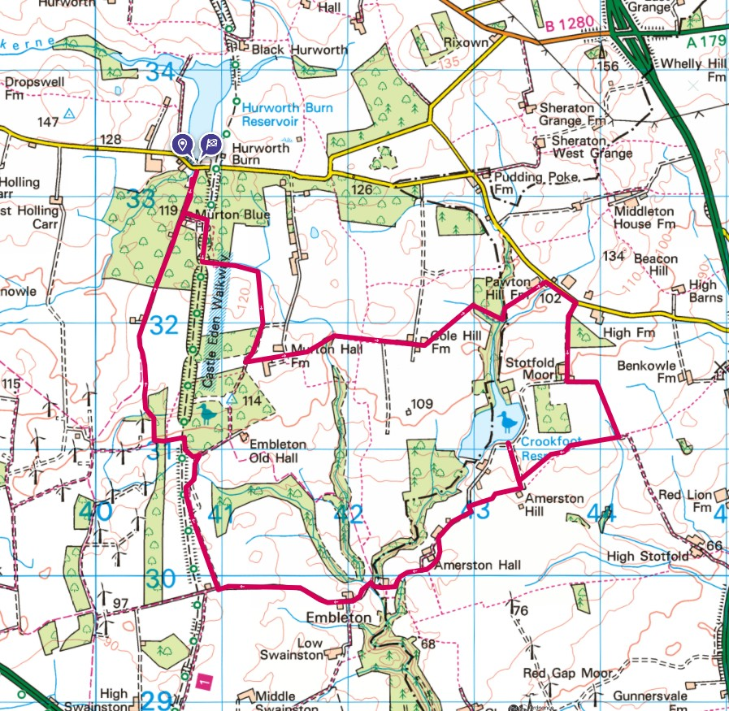
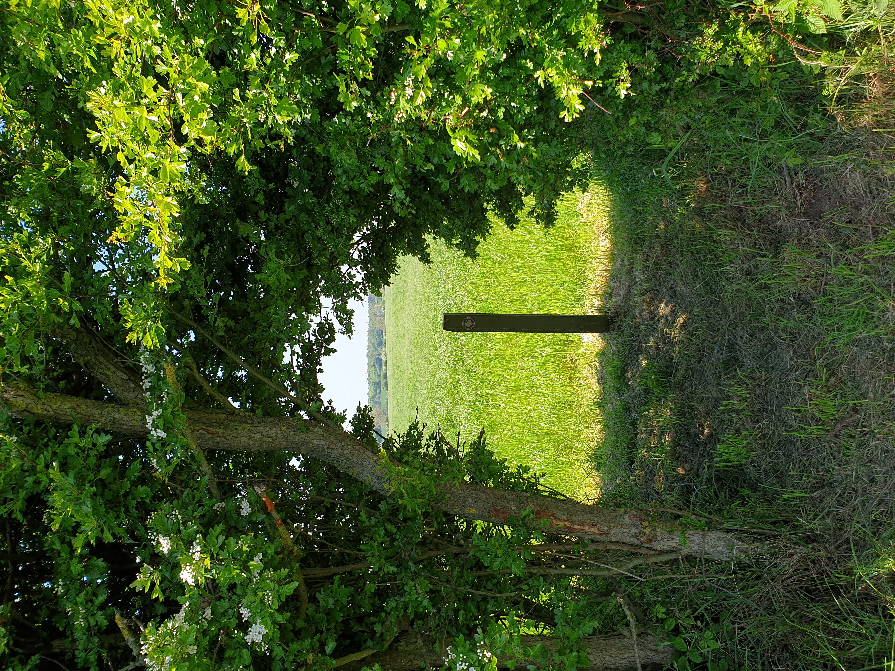
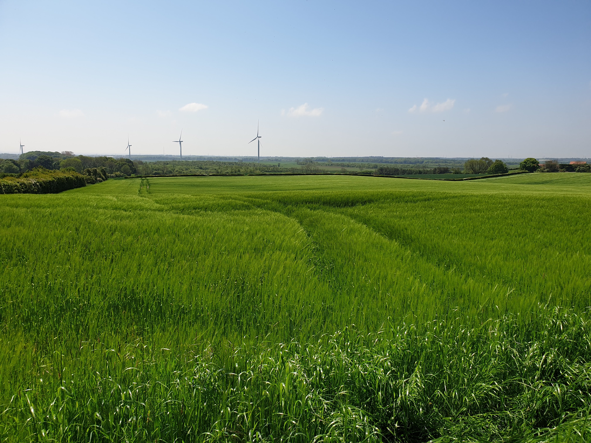

This was one of the longer walks and not too far away for Tiggy to travel. Parking at Hurworth Burn Railway Path Car Park it was a clockwise loop through fields and along tracks.

Most of the hike took on some nice tracks and paths.



Some routes were a little more tricky...


And some, not so tricky...

But worth it for the views.



A few friends we made along the way.